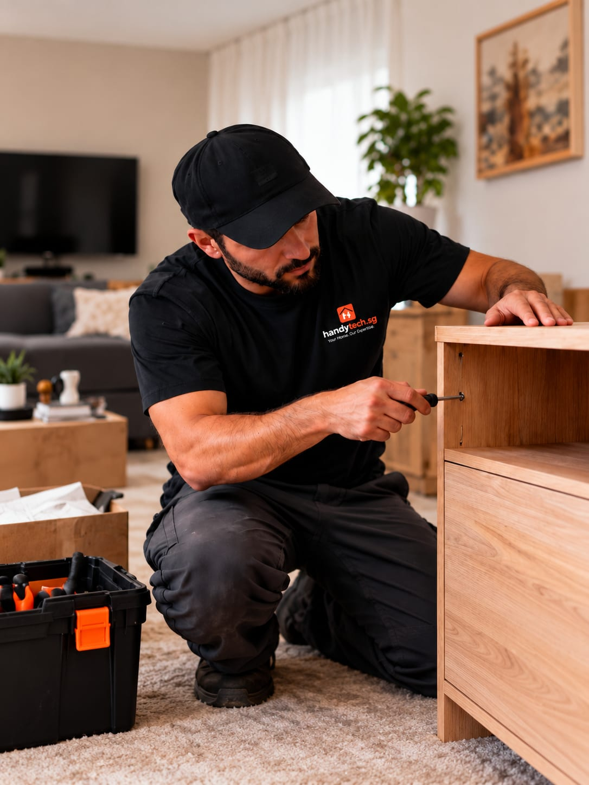

Handyman help for
practical home repairs.
Professional help for repairs, installations, adjustments and general maintenance — with fast response and workmanship you can trust.

for the jobs around home
04
Small jobs deserve a proper finish too.
Send a photo or a short description of the task. We will help clarify what is needed and whether it is a good fit.
- A photo of the item or area, with measurements where useful
- The wall type if you know it — concrete, brick or partition
- Your postal code so we can plan the visit
Mounting & hanging
TV brackets, mirrors, frames, shelves, alignment checks.
From $80Home repairs
Doors, cabinets, drawers, adjustments, hardware replacement.
From $80Installations
Curtain rods, shelves, locks, hooks and fittings.
From $100Furniture assembly
Tables, cabinets, beds, office furniture, stability checks.
From $80Drilling & minor works
Wall drilling, silicone touch-up, patching, clean finish.
From $60General maintenance
Home and office upkeep and repair support.
From $80Lock replacement
Door locks, latches and handles fitted.
From $100Curtains & blinds
Rods, rails and blind fitting.
From $100Carpentry fixes
Hinges, alignment and small timber repairs.
From $80Straightforward
from the start.
Reply within 1 business hour
Send details by form, WhatsApp or phone. For urgent electrical faults, call first — any time.
Quote before work
You get a clear scope and price to agree on before anything starts. No surprises.
30-day cover
Our workmanship is covered for 30 days after handover. Just tell us if something seems off.